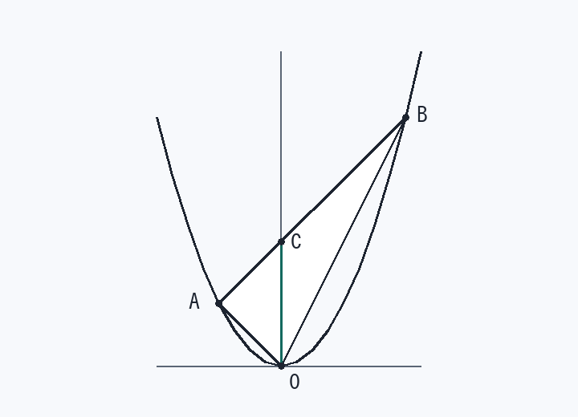

第9回 放物線と直線でできる三角形の面積
放物線 y = x² と直線 y = x + 2 は2点 A, B で交わる。原点を O とするとき、△OAB の面積を求めなさい。

解法の型
面積 = ½ ×（y切片 OC）×（2交点の x の差）
y軸で三角形を2つに切り、OC を共通の底辺と見るのが定番です。
解答手順
- 連立して交点x² = x + 2 → x² − x − 2 = 0 → (x − 2)(x + 1) = 0 → x = 2, −1
y は y = x² に代入するほうが速い → A(−1, 1)、B(2, 4)。
- y切片を出すy = x + 2 に x = 0 → C(0, 2)、OC = 2
- OC で2つに分ける△OCA = ½ × 2 × 1 = 1 ／ △OCB = ½ × 2 × 2 = 2
高さは「y軸までの距離」＝ x座標の絶対値です。
- 足す1 + 2 = 3 （= ½ × 2 × {2 − (−1)}）
検算：原点を頂点とする三角形の公式 S = ½|x₁y₂ − x₂y₁| でも ½|(−1)(4) − (2)(1)| = ½ × 6 = 3 で一致します。
差がつく2行
- 交点の x は解と係数の関係でも扱える（和 1、積 −2 → 差² = 1 + 8 = 9 → 差 3）。
- 三角形の頂点が原点でないときも、y軸（または x軸）と平行な線で切るのは同じ。切った線の長さが底辺になります。
覚えるべきこと（在庫に入れる1行）
△OAB = ½ ×（y切片）×（x の差）
類題（翌日、何も見ずに）
- y = x² と y = 2x + 3 の交点を A, B とするときの △OAB
答え
交点 x = −1, 3、y切片 3 → ½ × 3 × 4 = 6
- y = x² と y = x + 6 の交点を A, B とするときの △OAB
答え
交点 x = −2, 3、y切片 6 → ½ × 6 × 5 = 15
- y = x² と y = x + 2 の交点 A, B と点 C(0, 2) を使った △ACB の面積
答え
C は直線上の点なので A, B, C は一直線 → 三角形にならず面積 0
← 第8回 分数の打ち消し ｜ 第10回 食塩水の混合 → ｜ 高校受験数学の一覧に戻る
動画の音声ナレーション
解説の全文を読む
- こんにちは。知多丸の落ちこぼれ救済チャンネルです。難関大学に合格して、錯覚資産を手に入れて、一流企業に入社しよう。今日の問題は、こちら。放物線 ワイ は エックスの2乗 と、直線 ワイ は エックス たす 2 は、2点 A、B で交わっています。原点を オー とするとき、三角形 オーエービー の面積を求めなさい。高校入試の関数の大問で、いちばんよく出る形です。
- 型はこれです。手順は3つ。1、連立して交点を出す。2、直線とワイ軸の交点、切片をシーとする。3、三角形を、オーシー を共通の底辺と見て、2つに分けて足す。すると、面積は、切片 かける、2つの交点のエックス座標の差 かける 2分の1。この1行に落ちます。
- 手順1。交点を出します。エックスの2乗 は エックス たす 2。移項して、エックスの2乗 ひく エックス ひく 2 は 0。因数分解して、エックス ひく 2 かける エックス たす 1 は 0。エックス は 2 または マイナス1 です。
- ワイ座標も出しておきます。エックス が マイナス1 のとき、ワイ は 1。エックス が 2 のとき、ワイ は 4。よって、エー は マイナス1 と 1、ビー は 2 と 4 です。ワイ は エックスの2乗 に入れるほうが、計算が楽です。
- 手順2。直線 ワイ は エックス たす 2 の、ワイ切片を見ます。エックス に 0 を入れて、ワイ は 2。だから シー は 0 と 2。線分 オーシー の長さは 2 です。
- 手順3。三角形 オーエービー を、線分 オーシー で2つに切ります。三角形 オーシーエー と、三角形 オーシービー。どちらも底辺は オーシー で 2。高さは、エー、ビー から ワイ軸までの距離、つまりエックス座標の絶対値で、1 と 2 です。
- 足します。1 たす 2 で、3。三角形 オーエービー の面積は 3 です。まとめて書くと、2分の1 かける オーシー かける、2 ひく マイナス1、で 2分の1 かける 2 かける 3。やはり 3 になります。
- 検算です。座標から出す公式でも確かめます。エー は マイナス1 と 1、ビー は 2 と 4。原点を頂点とする三角形の面積は、2分の1 かける、エーのエックス かける ビーのワイ ひく ビーのエックス かける エーのワイ、の絶対値。マイナス1 かける 4 ひく 2 かける 1 は マイナス6。絶対値をとって6、その半分で 3。一致しました。図を見ても、だいたい3くらいの大きさです。
- おつかれさまでした。在庫に入れる1行は、これです。放物線と直線の三角形は、ワイ切片で切って、2分の1 かける 切片 かける エックスの差。明日、何も見ずに、ワイ は エックスの2乗 と ワイ は 2エックス たす 3 でやってみてください。交点は マイナス1 と 3、切片は 3、面積は 6 です。チャンネル登録をして、次の動画でも一緒に、要領よく積み上げていきましょう。